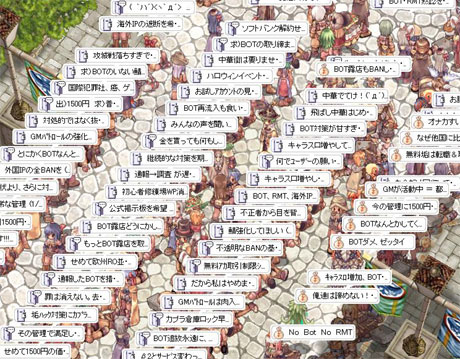

組織票について
公開日：

from: http://idun.seesaa.net/article/26437625.html
特定の職業組合・労働組合・宗教団体の意思に従って投票している人は、
つまり"組織票"に数えられる人たちは、
たとえ崇高な理念をもつとしても、
特定の団体の利害――つまりは私利私欲――のため、投票権を行使しているに過ぎない*1。
そういう人達は、私利私欲にまみれた政治家を批判する権利をもたない。
なぜならば、自分たちも私利私欲にまみれているからだ。
崇高な建前で武装していても、中身は涎を垂らして息を切らせたケダモノに過ぎない。
投票権を行使する場合は、一度すべての人が自分の私的利害・立場一切を脇に置き、理性を働かせて全体の・公共のためを図るべきだ*2。つまり、それぞれが一般意志の表現者でなければならない。
私利私欲――特殊意思――をいくら集計しても、一般意志にはならない。一般意志は、すべての人がその意思を一般意志に一致させたとき、はじめてたちあらわれる。
無論、すべての人がすべてを知り、等しく理性を行使できるわけはない。
だいたい、実現する前にそれを知り、理性を同調させるだなんて、そもそもが自己撞着的だ。夢物語だ。
けれど、だからといって諦める理由、私利私欲を図ってよい理由にはならないように思う。人間は空を飛べないけれど、それは空を飛ぶことを諦める理由にはならない。
――まず、組織としてではなく、何者にもしばられない・理性をもつ個人として、意思を表明するところからはじめよう。